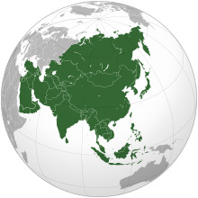

Asia (/ˈeɪʒə/ ⓘ AY-zhə, UK also /ˈeɪʃə/ AY-shə) is the largest continent[note 1][10][11] in the world by both land area and population.[11] It covers an area of more than 44 million square kilometres,[note 2] about 30% of Earth's total land area and 8% of Earth's total surface area. The continent, which has long been home to the majority of the human population,[12] was the site of many of the first civilisations. Its 4.7 billion people[13] constitute roughly 60% of the world's population.[14]
Asia shares the landmass of Eurasia with Europe, and of Afro-Eurasia with both Europe and Africa. In general terms, it is bounded on the east by the Pacific Ocean, on the south by the Indian Ocean, and on the north by the Arctic Ocean. The border of Asia with Europe is a historical and cultural construct, as there is no clear physical and geographical separation between them. A commonly accepted division places Asia to the east of the Suez Canal separating it from Africa; and to the east of the Turkish straits, the Ural Mountains and Ural River, and to the south of the Caucasus Mountains and the Caspian and Black seas, separating it from Europe.[15]
China and India traded places as the largest economies in the world from 1 to 1800 CE. China was a major economic power for much of recorded history, with the highest GDP per capita until 1500.[16][17][18] The Silk Road became the main east–west trading route in the Asian hinterlands while the Straits of Malacca stood as a major sea route. Asia has exhibited economic dynamism as well as robust population growth during the 20th century, but overall population growth has since fallen.[19] Asia was the birthplace of most of the world's mainstream religions including Hinduism, Zoroastrianism, Judaism, Jainism, Buddhism, Confucianism, Taoism, Christianity, Islam, Sikhism, and many other religions.